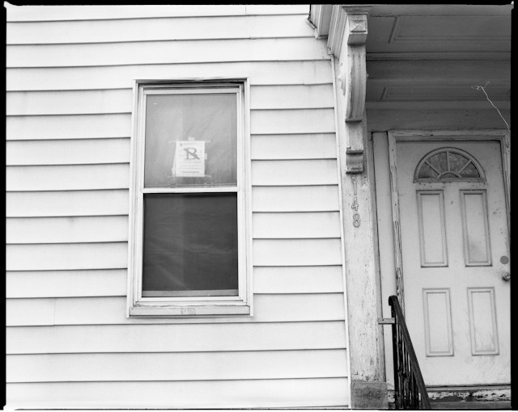

Tenant or Trespasser: A Guide for Florida Landlords

Renting out property in Florida can be both rewarding and challenging for landlords, especially when dealing with unwanted occupants. Florida Statute 82.035 serves as a beacon, guiding landlords through the complexities of distinguishing between tenants and trespassers.
Understanding the Legal Landscape:
Before delving into the specifics of Statute 82.035, it's essential to grasp the legal landscape it addresses. Landlords often find themselves in situations where someone needs to be removed from their property. The statute comes into play to help determine the individual's legal status – are they a tenant with specific rights or a trespasser subject to immediate removal?
Differentiating Between Tenants and Trespassers:
Florida Statute 82.035 provides clarity on the legal status of an occupant. It draws a clear line between tenants, who have certain legal rights, and trespassers, who may face eviction without the need for lengthy legal procedures.
1. Defining Tenants: The statute recognizes tenants as equal parties with landlords, emphasizing the importance of legal procedures for eviction. This means that if someone is considered a tenant, landlords must follow specific steps outlined in the law to remove them. These steps involve filing eviction court proceedings, notices, and adherence to the Landlord-Tenant Act.
2. Identifying Transients: A unique aspect of Statute 82.035 is its distinction between tenants and transients. While tenants have established legal rights, transients, or guests, may not. If an individual is identified as a transient, the landlord has the option to involve law enforcement for a more expedited removal process.
3. Legal Implications of Oral Agreements: Landlords may wonder about the validity of oral agreements. The statute clarifies that oral agreements for renting property are indeed valid. This is particularly relevant as not all lease agreements are in writing. Even without a formal written agreement, the statute ensures that legal recognition is given to oral arrangements.
4. Holdover Tenants vs. Trespassers: The statute confirms that a holdover tenant – someone who remains on the property beyond the lease term – is not automatically considered a trespasser. They must be removed in the same manner as a regular tenant - through eviction proceedings.
5. Determining Transient Occupancy: To determine whether an occupant is transient, the statute provides a framework. Factors that establish that a person is a transient occupant include, but are not limited to:
- The person does not have an ownership interest, financial interest, or leasehold interest in the property entitling him or her to occupancy of the property.
- The person does not have any property utility subscriptions.
- The person cannot produce documentation or identification cards sent or issued by a government agency which show that the person used the property address as an address of record with the agency within the previous 12 months.
- The person pays minimal or no rent for his or her stay at the property.
- The person does not have a designated space of his or her own, such as a room, at the property.
- The person has minimal, if any, personal belongings at the property.
- The person has an apparent permanent residence elsewhere.
6. Exclusion of Transients from Landlord-Tenant Act: Importantly, if an occupancy is classified as transient, the protections offered by the Landlord-Tenant Act do not apply. This empowers landlords to involve law enforcement for the removal of transients without navigating the complexities of the eviction process.
Closing
Florida Statute 82.035 empowers landlords to make informed decisions by distinguishing between tenants with legal rights and trespassers who may be subject to more immediate removal. The statute provides clarity on oral agreements, holdover tenants, and the determination of transient occupancy, all while excluding transients from the protective umbrella of the Landlord-Tenant Act.
DISCLAIMER: The information provided on this website does not, and is not intended to, constitute legal advice; instead, all information, content, and materials available on this site are for general informational purposes only.